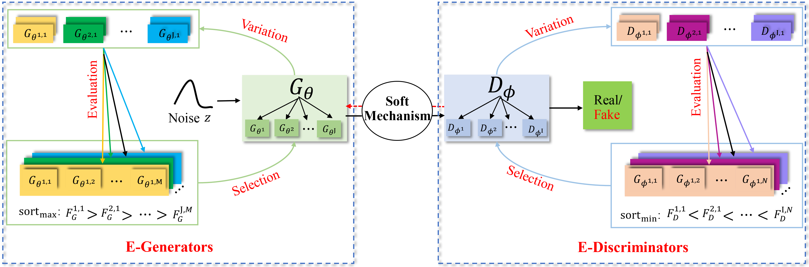
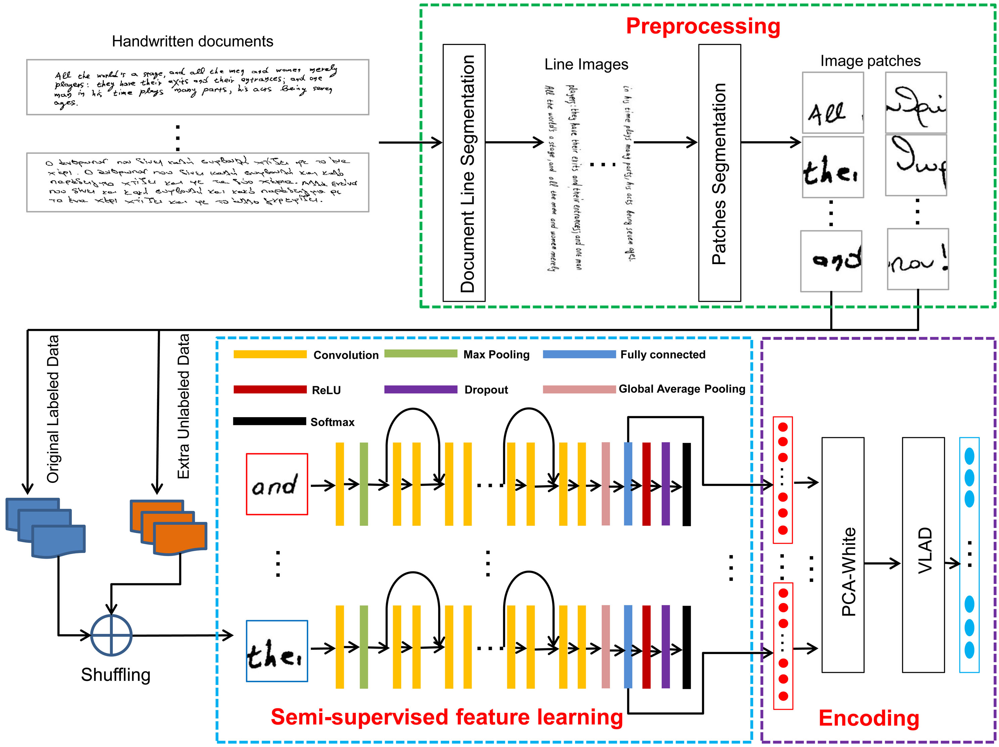
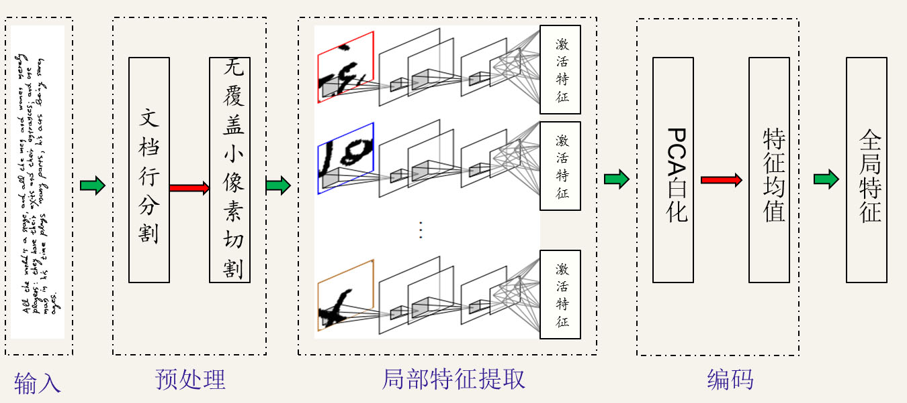

Shiming Chen 陈使明
PhD student
1070 Arastradero Road,
Dept. of Radiation Oncology
Stanford University
Palo Alto, CA, 94304
Email: shimingchen at hust dot edu dot cn; gchenshiming at
gmail dot com


Shiming Chen 陈使明PhD student
1070 Arastradero Road, |
|
|  | CDE-GAN: Cooperative Dual Evolution Based Generative Adversarial Network. Shiming Chen, Wenjie Wang, Beihao Xia, Xinge You, Qinmu Peng, Zehong Cao, Weiping Ding. arXiv preprint arXiv: 2008.09388 , 2020. [ Project Page][arXiv] [PDF] Submitted to IEEE Transactions on Evolutionary Computation (TEVC) (under review) |

|
Kernelized Similarity Learning and Embedding for Dynamic Texture Synthesis. Shiming Chen, Peng Zhang, Xinge You, Qinmu Peng, Xin Liu, Zehong Cao, Dacheng Tao. arXiv preprint arXiv: 1911.04254, 2019. [Project Page][arXiv] [PDF] Submitted to IEEE Transactions on Image Processing (TIP) (under review) |
|  | Semi-Supervised Feature Learning for Improving Writer Identification. Shiming Chen, Yisong Wang, Chin-Teng Lin, Weiping Ding, Zehong Cao. Information Sciences (INS), 482:156-170, 2019. [PDF](IF=5.910,CCF-B) |
|  | A Robust Offline Writer Identification Method. Shiming Chen, Yisong Wang. ACTA AUTOMATICA SINICA(自动化学报), 46(1):108-116, 2020. [PDF]
[Code] |
Prof. Chin-Teng Lin(UTS, Australia, IEEE Fellow), Prof. Weiping Ding(NTU, China), Prof. Zehong Cao(UTS, Australia), Prof. Yisong Wang(GZU, China), Dr. Zhedong Zheng(UTS, Australia), Dr. Yaxing Wang(UAB, Span), Dr. Vicent Christlein(FAU, Germany),